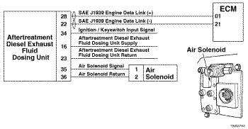
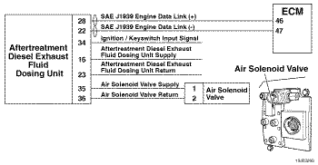

Código de Falha 3548
|
| CÓDIGO | RAZÃO | EFEITO |
| Código de Falha: 3548 PID: SPN: 5392 FMI: 31 LÂMPADA: Âmbar SRT: |
Perda de Escorva da Unidade Dosadora de Fluido de Escape de Diesel do Sistema de Pós-tratamento - Condição Existente. A unidade dosadora não é capaz de fazer a escorva. |
A injeção de fluido de escape de diesel no sistema de pós-tratamento é desabilitada. |
|
 ISB4.5, ISB6.7, ISD4.5 e ISD6.7 CM2150 SN/ISL8.9 CM2150 SN/ISZ13 CM2150 - Unidade Dosadora de Fluido de Escape de Diesel do Sistema de Pós-tratamento
|
|
 ISM11 CM876 SM - Unidade Dosadora de Fluido de Escape de Diesel do Sistema de Pós-tratamento
|
Para um sistema de pós-tratamento de SCR assistido a ar, a unidade dosadora de fluido de escape de diesel exige uma pressão de ar fornecida pelos tanques de ar do OEM para escorvar e ajudar a transportar o fluido de escape de diesel da unidade para o pulverizador de pós-tratamento. A unidade dosadora de fluido de escape de diesel mede com precisão a quantidade de fluido de escape de diesel a ser injetada no sistema de pós-tratamento. A unidade dosadora de fluido de escape de diesel possui três ciclos principais: escorva, dosagem e purga. O ciclo de escorva ocorre quando a chave de ignição é ligada (posição ON) e garante que o fluido de escape de diesel esteja disponível na unidade dosadora. Durante o ciclo de dosagem, o fluido de escape de diesel é fornecido ao bico injetor de pós-tratamento. Um ciclo de purga ocorre quando o motor é desligado. O ciclo de purga garante que todo o fluido de escape de diesel seja removido das linhas de fluido e do pulverizador de pós-tratamento.
A localização da unidade dosadora de fluido de escape de diesel depende do OEM. Consulte o manual de serviços do OEM para mais informações.
Este diagnóstico é executado quando é dada a partida no motor e este funciona enquanto a unidade dosadora encontra-se no estágio de escorva, que pode durar até 12 minutos depois que a chave de ignição é ligada.
O sistema da unidade dosadora de fluido de escape de diesel consiste em três fases. Essas fases ocorrem na seguinte sequência: Escorva, dosagem e purga. Este código de falha é ativado quando a unidade dosadora não consegue fazer a escorva.
O Código de Falha 3548 é registrado pelos seguintes modos de falha externos:
O Código de Falha 3548 é acionado pelos seguintes modos de falha interna da unidade dosadora de fluido de escape de diesel:
Se as linhas de fluido de escape de diesel estiverem bloqueadas por depósitos, certifique-se de que a unidade dosadora faça a purga corretamente quando a chave de ignição é desligada (OFF). As contagens de purgas incompletas podem ser vistas usando-se o menu do Monitor/Registrador de Dados na seção do sistema de pós-tratamento do INSITE™. Se o veículo estiver equipado com um interruptor de isolamento das baterias, o mesmo deve ter um dispositivo embutido de atraso para evitar o desligamento da unidade dosadora até que a sequência de purga seja completada.
Consulte o diagnóstico do Código de Falha 3548.